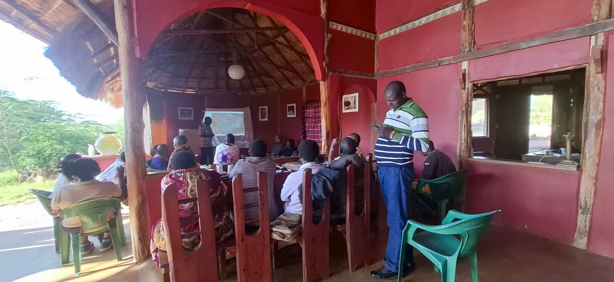
Chui Mama Apiary — Beekeeping Enterprise
Chui Mama Women's Group (CMWG) / Chui Mama Executive Committee · Chui Mama community, Ewaso, Mukogodo area, Laikipia North, Kenya
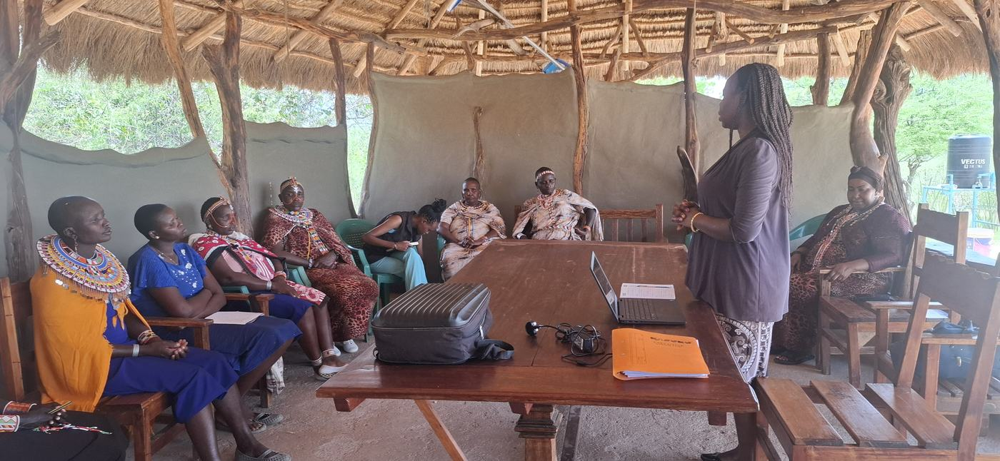
Chui Mama Permaculture Project
Ewaso Community · Ewaso, Laikipia County, Kenya
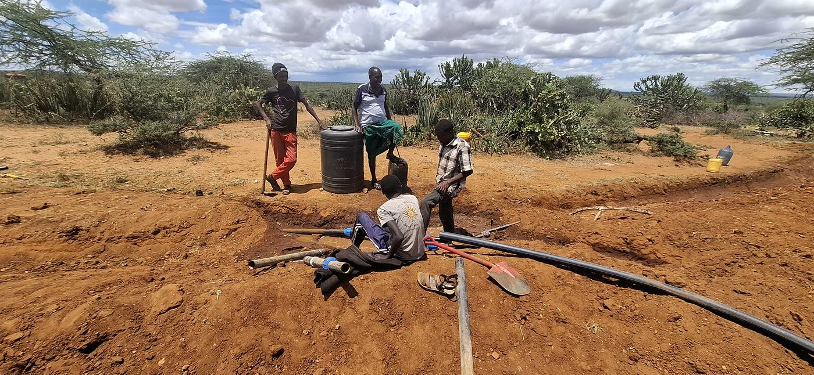
Ewaso Borehole Solarisation Enhancement
Ewaso Community · Ewaso, Laikipia County, Kenya (adjacent to Loisaba Conservancy)
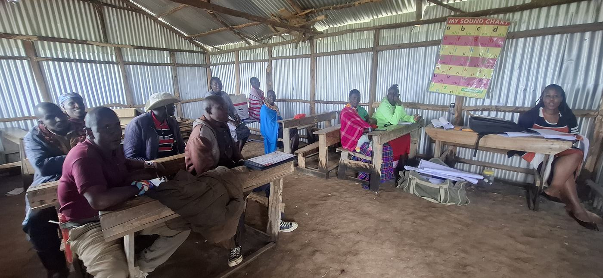
Ilenya Community Borehole — Solar Water Pump & Distribution System
Ilenya Community · Ilenya, Rumuruti area, Laikipia North County, Kenya

Lekasuiyian Community Borehole Solarisation
Lekasuiyian Community (Oglulului Group Ranch) · Lekasuiyian, Oglulului Group Ranch, Laikipia North, Kenya
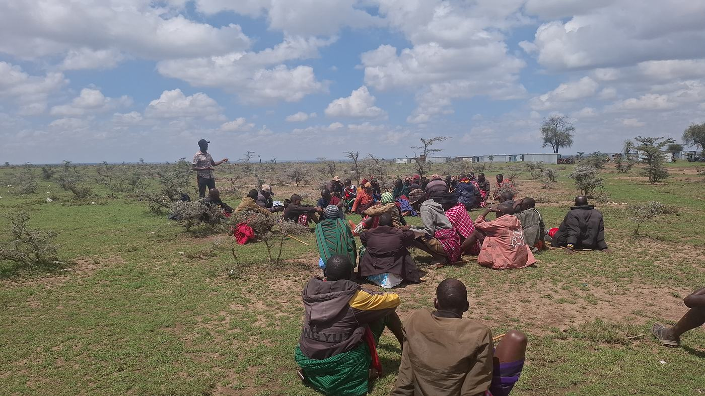
Proposed Loisiwa Water Project
Loisiwa area, Salama Location · Loisiwa area, Salama Location, Laikipia County, Kenya
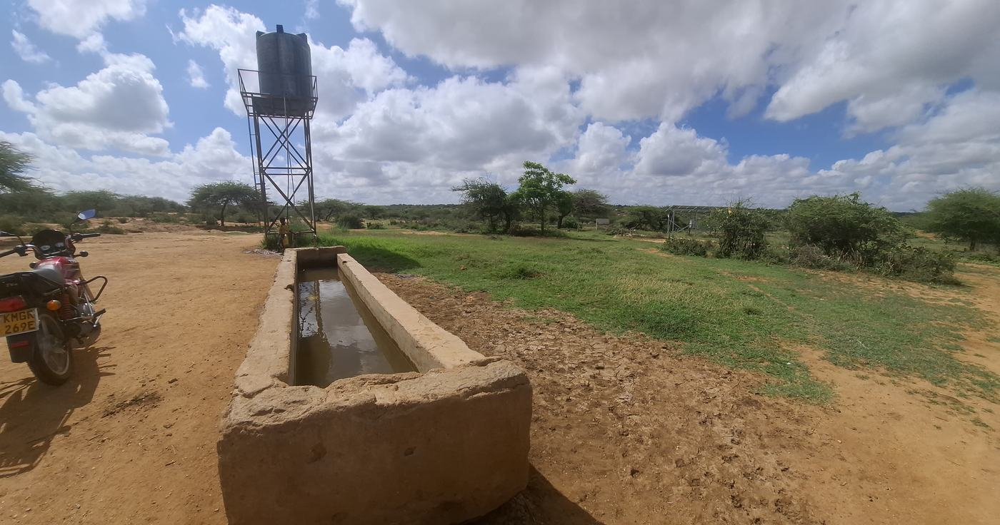
Rehabilitation & Solarisation of Chui Mama Borehole
Chui Mama Permaculture Garden / Ewaso Community · Chui Mama Borehole, Ewaso, Loisaba Conservancy, Laikipia County, Kenya

Rehabilitation of the Olgulului/Ololarashi Water Pipeline
Olgulului/Ololarashi Group Ranch (OOGR) · North of Amboseli National Park, Loitokitok Sub-County, Kajiado County, Kenya
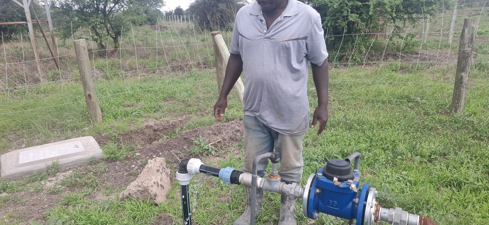
Solarisation of Esiteti Community Borehole
Esiteti Community · Amboseli, Kajiado County, Kenya
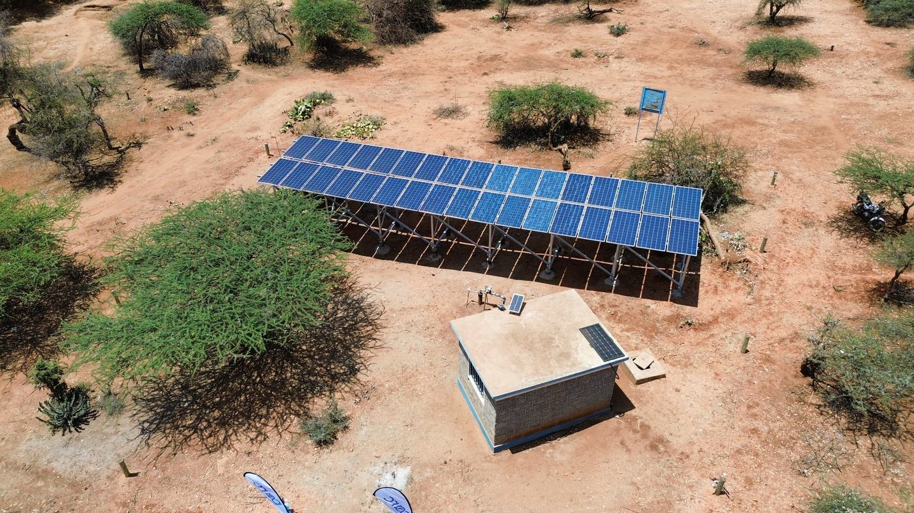
Solarisation of Ewaso Community Borehole
Ewaso Community · Ewaso, Laikipia County, Kenya
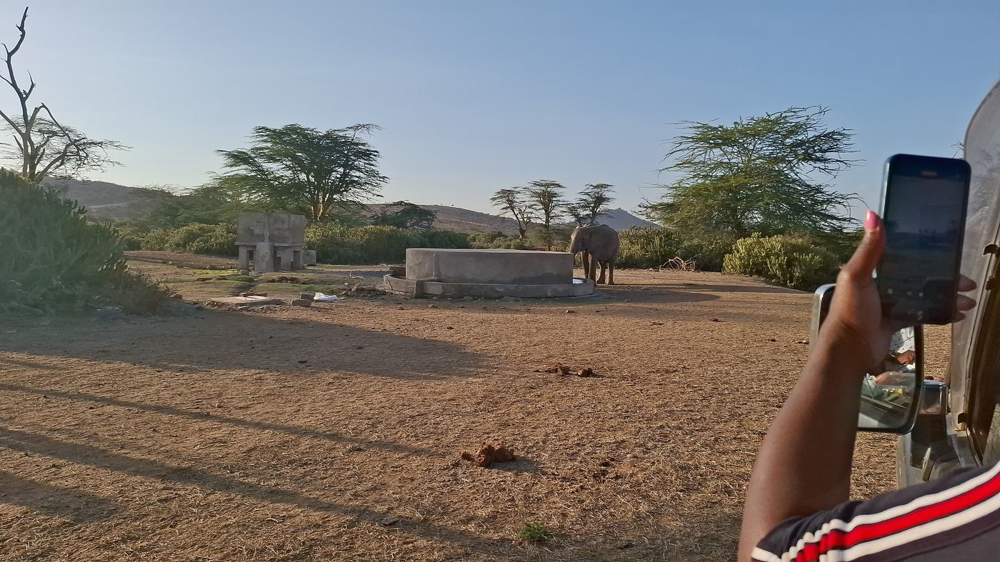
Solarisation of Kijito Community Borehole
Kijito Community (Oglulului Group Ranch) · Kijito, Laikipia North, Kenya
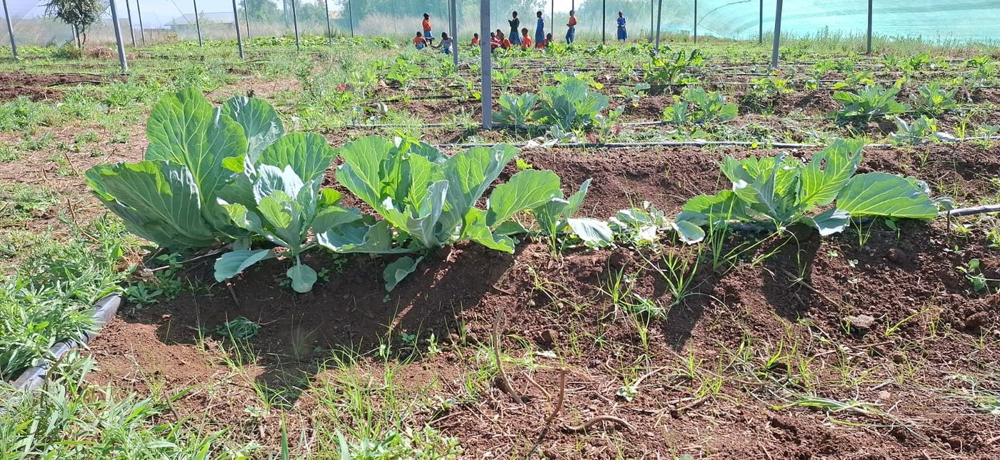
Solarisation of Lokusero Community Borehole
Lokusero Community · Mukogodo Forest, Laikipia County, Kenya
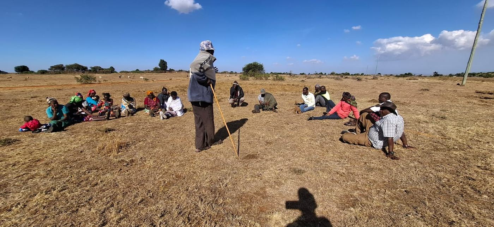
Solarisation of Murua Community Spring Water
Murua Community · Murua, Laikipia County, Kenya
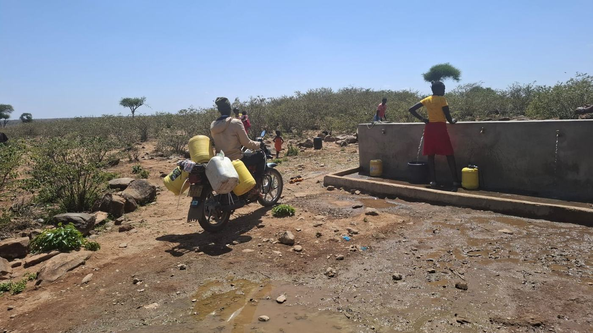
Solarisation of Sukutan Community Borehole
Sukutan Community · Sukutan, Laikipia North, Kenya
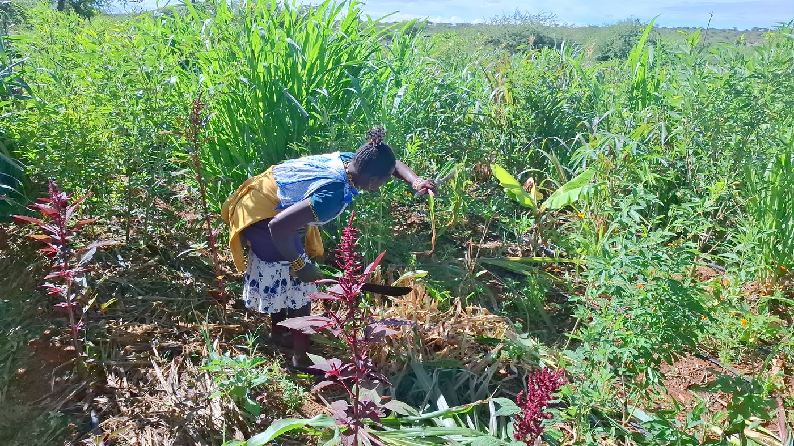
Solarisation of Withare Community Borehole
Withare Community · Laikipia County, Kenya